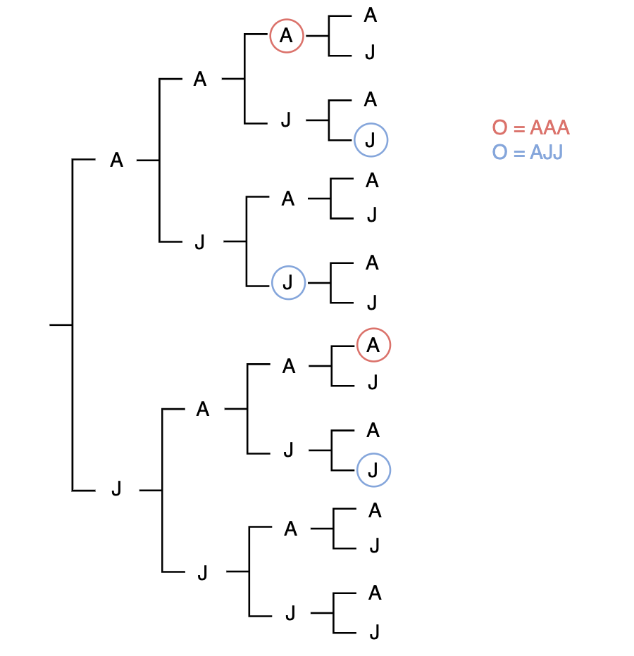

Rediscovering a fun probability problem
On a recent trip, two friends and I accidentally rediscovered a neat probability factoid while playing cards:
Suppose a coin is flipped until a specific sequence of length \(n\) is reached. Although the probability of any sequence occuring over the next \(n\) tosses is equal for any sequence at any given time (by independence), the expected number of tosses until the sequence is reached can differ by sequence.
This “paradox” does not have a specific name as far as we can tell, but it is solidly documented and applies to many problems involving sequences of events. We had a lot of fun discovering it nonetheless, so I decided to write about thinking process that led us to it.
Arriving at the problem
Our confusion began during a game of Dirty Clubs on a Northern Rail train from London to Liverpool. During one of our typical post-hand discussions about optimal strategies, I posed a question to my friend (a medical student): what is the expected number of cards until the sequence “Ace, Jack, Jack” appears in a with-replacement deck 1. To make things even simpler, we started by only considering draws from an eight-card deck of Jacks and Aces.
My friend’s approach was to draw a tree diagram to a reasonable number of draws and look for a pattern. Interested in where it was going, my other friend (a soon-to-be applied math grad student) and I jumped in. Things started to get complicated, so I suggested that we just consider AAA (Ace, Ace, Ace) rather than AJJ (Ace, Jack, Jack), and they quickly agreed, knowing that the probability of flipping each of these sequences at a given time is equally \(\frac{1}{8}\). Our initial attempts to write the expectation as an infinite sum were unsuccessful, so we eventually made use of my brief experience with stochastic processes and used the Markov chain expected waiting time strategy to arrive at an answer of 14 flips.
Something immediately felt off about that answer, as 14 flips seemed far too high for a string of just three cards. We re-derived and re-solved the system of equations twice, but kept getting 14. In the end, we decided that it was the unsatisfactory, yet correct, answer.
Still unsatisfied a few days later, we revisited the problem and realized that both our mathematical approach and our guts were half right, but neither was fully correct. The reason was extremely interesting.
The Solution
A misconception of the “misconception of chance”
In a 1974 paper, Daniel Kahneman and Amos Tversky describe a fallacy called the “misconception of chance”, whereby people erroneously believe that sequences of independent events that appear random such as HTHTHHT (for a fair coin toss) are more likely than sequences that non-random such as HHHHHHH. In reality, independence tells us that the probability for each of those sequences is \((\frac{1}{2})^7\), although the probability of getting the 4 heads out of 7 tosses is greater than the probability of getting 7 heads because there are more (equally likely) sequences that contain exactly 4 heads than there are sequences that contain 7 heads.
It was with this idea in mind that my friends and I thought that waiting for the sequence AAA was the same as waiting for the sequence AJJ. As we realized later, this fact is only true when the past/present are ignored. Two different viewpoints can be used to see why.
Viewpoint 1: Tree Diagrams
Tree diagrams are useful ways to visualize probabilities of (short) sequences of discrete events. It was my friend’s return to our diagram up to 4 card draws that first revealed the paradox. This diagram is pictured below:
 The key point here is to remember that once a sequence has been reached, the tree stops. Hence why the top A, which would be the fourth A in AAAA, is not circled in red. This A will never be reached if we are looking for AAA, so we have \[P(\text{reach AAA in 4 or less draws}) = P(\text{reach AAA on 3rd}) + P(\text{reach AAA on 4th}) = \frac{1}{8} + \frac{7}{8}\cdot\frac{1}{14} = \frac{3}{16}.\]
On the other hand, AJJ can’t occur after another AJJ within four draws. This gives
\[P(\text{reach AJJ in 4 or less draws}) = P(\text{reach AJJ on 3rd}) + P(\text{reach AJJ in 4th}) = \frac{1}{8} + \frac{7}{8}\cdot\frac{2}{14} = \frac{4}{16}.\] Essentially, AJJ is more likely because you have more chances in the first four draws to get AJJ because two of the chances to get AAA overlap. If you are looking for AJJ and the first card is an A but the second is an A, which breaks the sequence, you still have another chance to get AJJ in four draws because the breaking card is actually the first in the sequence. If you are looking for AAA, a breaking Jack on the second draw eliminates any chance of getting the sequence in four or less.
Viewpoint 2: Stochastic Process
A second approach to this problem is to consider a Markov chain with states corresponding to how far along the desired sequence you are:
- State 0: Starting state. Still need the full sequence of three, so the minimum number of turns left is three.
- State 1: The first card of the sequence has just been drawn. If the next two a drawn correctly, the game can end in two turns.
- State 2: The first two card of the sequence have just been drawn. If the next draw is what we are looking for, the game will end in one turn.
- State 3: The absorbing final state. This is reached when the desired sequence has just been drawn.
Using 0.5 as the probability for drawing A or J on every turn, the transition diagrams for AAA and AJJ are:
 Note the distinct differences. A break in the sequence will always knock you back to state 0 for AAA, but for AJJ, you never return to state 0 once you leave it because breaking the sequence after it has started only occurs when an A, the first card in the sequence, is drawn.
Note the distinct differences. A break in the sequence will always knock you back to state 0 for AAA, but for AJJ, you never return to state 0 once you leave it because breaking the sequence after it has started only occurs when an A, the first card in the sequence, is drawn.
The expected number of draws until state 3, AAA, is reached can be found by solving the following system of equations, which follow directly from the diagram:
\[ E_0 = \frac{1}{2}(E_1 + 1) + \frac{1}{2}(E_0 + 1)\\ E_1 = \frac{1}{2}(E_2 + 1) + \frac{1}{2}(E_0 + 1)\\ E_2 = \frac{1}{2}(E_3 + 1) + \frac{1}{2}(E_0 + 1)\\ \] where \(E_i\) is the expected time until state 3, AAA, is reached given that the chain is currently in state \(i\). Clearly \(E_3 = 0\), so this is a system of three equations with three unknowns. Solving for \(E_0\) gives 14.
In contrast, the system of equations for AJJ is:
\[ E_0 = \frac{1}{2}(E_1 + 1) + \frac{1}{2}(E_0 + 1)\\ E_1 = \frac{1}{2}(E_2 + 1) + \frac{1}{2}(E_1 + 1)\\ E_2 = \frac{1}{2}(E_3 + 1) + \frac{1}{2}(E_1 + 1)\\ \]
Now, solving for \(E_0\) gives 8. If you are looking for AJA, the Markov diagram and corresponding system of equations give 10 as the expected number of draws.
Now we know…
After working out these details, our assumption that AAA was obviously the same as AJJ felt like a silly mistake. As it turns out though, a number of researchers have fallen victim to similar fallacies in the past, including Amos Tversky himself in a 1985 paper about the hot-hand in basketball. So I guess the takeway is that probability is hard…
Footnotes
As every Midwesterner should know, Ace, Jack, Jack is a good sequence of cards.↩︎